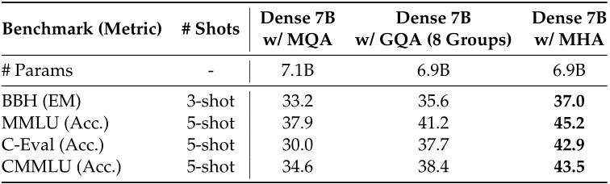
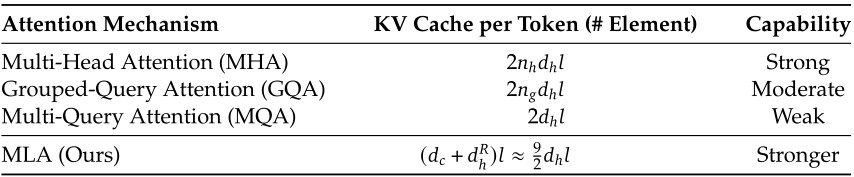

DeepSeek-V2关键技术
Architecture
总体而言，DeepSeek-V2 仍然采用的是 Transformer 架构，其中每个 Transformer 模块都由一个注意力模块和一个 FFN 组成。然而，对于注意力模块和 FFN，团队均设计并采用了创新的架构。在注意力方面，团队设计了 Multi-head Latent Attention（MLA），它利用 Low-Rank Key-Value Joint Compression 来消除推理时 KV cache 的瓶颈，从而实现高效的推理。对于 FFN，团队采用了 DeepSeekMoE 架构，这是一种高性能的 MoE 架构，能够以经济的成本训练出强大的模型。DeepSeek-V2 的架构示意图如下图所示，团队将在本节中介绍 MLA 和 DeepSeekMoE 的详细信息。DeepSeek-V2 遵循 DeepSeek-67B 的设置。
Multi-Head Latent Attention: Boosting Inference Efficiency
传统的 Transformer 模型通常采用 MHA，但在生成过程中，其庞大的 KV cache 会成为限制推理效率的瓶颈。为了减少 KV cache ，Multi Query Attention （MQA） 和 Group Query Attention（GQA） 应运而生。它们所需的 KV cache 规模较小，但性能却比不上 MHA （下表给出了关于MHA、GQA和 MQA 的消融实验结果）。

Comparison Between MLA and MHA
在下表中展示了分别配备 MLA 和 MLA 的 MoE 在四个严苛基准测试上的评估结果。为得出可靠结论，团队在两种规模下对模型进行了训练和评估。两个小型 MoE 总参数量约为160亿，团队使用1.33万亿个词元对它们进行训练。两个大型 MoE 总参数量约为2500亿，团队使用4200亿个词元对它们进行训练。此外，除了注意力机制不同之外，两个小型 MoE 和两个大型 MoE 分别具有相同的架构。从表中可以观察到，MLA 的性能优于 MHA。更重要的是，与 MHA 相比，MLA 所需的 KV cache 显著更少（小型 MoE 少14%，大型 MoE 少4%）。

对于DeepSeek-V2, MLA 配备了 Low-Rank Key-Value Joint Compression ，其性能优于 MHA，而且所需的 KV cache 大幅减少。
Standard Multi-Head Attention
首先介绍标准的 MHA 作为背景。设 $\displaystyle d$ 为嵌入维度，$\displaystyle 𝑛_{ℎ}$ 为 head 的数量，$\displaystyle 𝑑_{ℎ}$ 为每个 head 的维度，$\displaystyle h_{t} \in {\mathbb R}^𝑑 $ 为注意力层中第 $\displaystyle t$ 个 token 的输入。标准 的 MHA 首先通过三个矩阵 $\displaystyle 𝑊^𝑄,𝑊^𝐾,𝑊^𝑉 \in {\mathbb R}^{𝑑_{h}n_{ℎ}×𝑑}$ 分别生成 $\displaystyle q_{t}, k_{t}, v_{t} \in {\mathbb R}^{{d_{h}}{n_{h}}}$： \begin{equation} \displaystyle q_{t}=𝑊^𝑄h_{t} \end{equation}
\begin{equation} \displaystyle k_{t}=𝑊^Kh_{t} \end{equation}
\begin{equation} \displaystyle v_{t}=𝑊^Vh_{t} \end{equation}
然后，$\displaystyle q_{t}, k_{t}, v_{t}$ 会被分割成 $\displaystyle 𝑛_{ℎ}$ 个 head 以进行MHA计算：
\[ \displaystyle [q_{t,1};q_{t,2};\dots ;q_{t,n_{h}}] = q_t \]\[ \displaystyle [k_{t,1};k_{t,2};\dots ;k_{t,n_{h}}] = k_t \]\[ \displaystyle [v_{t,1};v_{t,2};\dots ;v_{t,n_{h}}] = v_t \]\[ \displaystyle {o_{t,i}} = \sum\limits_{j = 1}^t {softmax_j\left( {\frac{{q_{t,i}^T{k_{j,i}}}}{{\sqrt {{d_h}} }}} \right){v_{j,i}}} \]\[\displaystyle {u_t} = {W^O}\left[ {o_{t,1};o_{t,2};\dots ;o_{t,n_{h}}} \right]\]其中 $\displaystyle q_{t,i}, k_{t,i}, v_{t,i} \in {\mathbb R}^{{d_{h}}}$分别表示第 $𝑖$ 个 head 的 query、key 和 value；而 $\displaystyle W^{O} \in {\mathbb R}^{𝑑 \times d_{ℎ}n_{ℎ}}$ 表示输出投影矩阵。在推理过程中，所有的 key 和 value 都需要被缓存以加速推理过程，因此 MHA 需要为每个 token 缓存 $\displaystyle 2n_{ℎ}d_{ℎ}l$ 个元素。在模型部署中，这种庞大的 KV cache 是一个很大的瓶颈，限制了最大 batch 大小和序列长度。
Low-Rank Key-Value Joint Compression
MLA 的核心是通过 Low-Rank 联合压缩 key 和 value 来减少 KV cache , 计算方式如下：
\[ c_t^{KV} = {W^{DKV}}{h_t} \]\[ k_t^C = {W^{UK}}c_t^{KV} \]\[V_t^C = {W^{UK}}c_t^{KV}\]其中 \( c_{t}^{KV} \in \mathbb{R}^{d_c} \) 是 key 和 value 的 compressed latent vector ；\( d_c (\ll d_h n_h) \) 表示 KV 压缩维度；\( W^{DKV} \in \mathbb{R}^{d_c \times d} \) 是下投影矩阵；\( W^{UK}, W^{UV} \in \mathbb{R}^{d_h n_h \times d_c} \) 分别是 key 和 value 的上投影矩阵。在推理过程中，MLA仅需缓存 \( c_t^{KV} \)，因此其 KV cache 仅有 \( d_c l \) 个元素(\( l \) 表示层数)。此外，在推理时，由于 \( W^{UK} \) 可以被吸收到 \( W^Q \) 中，且 \( W^{UV} \) 可以被吸收到 \( W^O \) 中，团队甚至不需要计算注意力中的 key 和 value。下图直观地展示了MLA 中的 KV joint compression 是如何减少 KV cache 的。
其中 $c_t^{Q} \in \mathbb{R}^{d_c^{\prime}}$ 是 query 的 compressed latent vector；$d_c^{\prime}( \ll d_hn_h)$ 表示 query 的压缩维度；${W^{DQ}} \in {\mathbb R}^{d_c^{\prime} \times d}$ 和 ${W^{UQ}} \in {\mathbb R}^{d_hn_h \times d_c^{\prime}}$ 分别是 query 的下投影矩阵和上投影矩阵。
Decoupled Rotary Position Embedding
遵循DeepSeek 67B的做法，团队原计划在 DeepSeek-V2 中使用 Rotary Position Embedding(RoPE)。然而，RoPE 与 Low-Rank KV compression 不兼容。具体来说，RoPE 对 key 和 query 都是位置敏感的。如果团队对 key \( k_t^C \) 应用 RoPE ，那么方程 10 中的 \( W^{UK} \) 将会与一个位置敏感的 RoPE 矩阵耦合。这样一来，在推理过程中，\( W^{UK} \) 不能再被吸收到\( W^Q \)中，因为与当前生成的 token 相关的 RoPE 矩阵会位于 \( W^Q \) 和 \( W^{UK} \) 之间，而矩阵乘法不满足交换律。因此，团队必须在推理时重新计算所有前缀 token 的 key ，这将显著阻碍推理效率。
作为解决方案，团队提出了 Decoupled RoPE 策略，该策略使用额外的 multi-head queries $q_{t,i}^R \in {{\mathbb R}^{d_h^R}}$ 和一个共享的 key $k_t^R \in {{\mathbb R}^{d_h^R}}$ 来承载RoPE，其中 $d_h^R$ 表示Decoupled query 和 key 的 per-head 维度。采用Decoupled RoPE 策略后，MLA 执行以下计算：
\[\left[ {q_{t,1}^R;q_{t,2}^R; \ldots ;q_{t,{n_h}}^R} \right] = q_t^R = RoPE\left( {{W^{QR}}c_t^Q} \right)\]\[k_t^R = RoPE\left( {{W^{KR}}{h_t}} \right)\]\[{o_{t,i}} = \sum\limits_{j = 1}^t {softmax_{j}} \left( {\frac{{q_{t,i}^T{k_{j,i}}}}{{\sqrt {{d_h} + d_h^R} }}} \right)v_{j,i}^C\]\[{u_t} = {W^O}\left[ {{o_{t,1}};{o_{t,2}}; \ldots ;{o_{t,{n_h}}}} \right]\]其中 ${W^{QR}} \in {{\mathbb R}^{d_h^R{n_h} \times d_c^{\prime}}}$ 和 ${W^{KR}} \in{\mathbb R}^{d_h^R \times d}$ 分别是用于生成解耦 query 和 key 的矩阵；RoPE(·) 表示应用 RoPE 矩阵的操作。在推理过程中，解耦的 key 也需要被缓存。因此，DeepSeek-V2总共需要一个包含 $(dc+d^R_h)l$ 个元素的 KV cache。
为了完整展示MLA的计算过程，在附录C中整理并提供了其全部公式。这样做可以让读者更清晰地理解MLA的具体运作机制及其数学原理，从而便于进一步的研究和应用。
Comparison of Key-Value Cache
下表中展示了不同注意力机制之间每个 token 的 KV cache 的比较。MLA 仅需要少量的 KV cache ，与只有2.25个组的 GQA 相当，但却能实现比 MHA 更强的性能。 
DeepSeekMoE: Training Strong Models at Economical Costs
Basic Architecture
对于 FFNs，团队采用了 DeepSeekMoE 架构。DeepSeekMoE 有两个关键理念：一是将专家分割成更细的粒度以提高专家的专业化程度和知识获取的准确性；二是隔离一些共享专家以减少路由专家之间的知识冗余。在激活的专家参数数量和总的专家参数量相同的情况下，DeepSeekMoE 相比传统的 MoE 架构有显著的性能提升。
令 $u_t$ 表示第 t 个 token 的 FFN 输入，团队按照如下方式计算 FFN 输出 $h_t^{\prime}$：
\[h_t^{\prime} = {u_t} + \sum\limits_{i = 1}^{{N_s}} {FFN_i^{\left( s \right)}} \left( {{u_t}} \right) + \sum\limits_{i = 1}^{{N_r}} {{g_{i,t}}FFN_i^{\left( r \right)}} \left( {{u_t}} \right)\]\[{s_{i,t}} = softmax_{i}\left( {u_t^T{e_i}} \right)\]其中， $Ns$ 和 $Nr$ 分别表示共享专家和路由专家的数量； $FFN^{(s)}_i(⋅)$ 和 $FFN^{(r)}_i(⋅)$ 分别表示第 i 个共享专家和第 i 个路由专家； Kr 表示激活的路由专家数量； $g_{i,t}$ 是第 i 个专家对于第 t 个 token 的门控值； $s_{i,t}$ 表示 token 到专家的亲和度； $e_i$ 是该层中第 i 个路由专家的中心点； $Topk(⋅,K)$ 表示根据为第 t 个 token 和所有路由专家计算出的亲和度分数中的前 K 个最高分数组成的集合。
Alignment
Supervised Fine-Tuning
基于团队之前的研究，团队精心策划了指令调优数据集，包含150万条实例，其中120万条用于提高有用性（helpfulness），30万条用于增强安全性（safety）。相比最初的版本，团队提升了数据质量以减少幻觉响应并提高写作能力。在对DeepSeek-V2进行微调时，团队使用了2个epoch，并将学习率设置为5×10^-6。对于DeepSeek-V2 Chat（SFT）的评估，团队主要采用了基于生成的基准测试，除了几个代表性的多选题任务（如MMLU和ARC）。此外，团队还使用了指令遵循评估（IFEval）（Zhou等，2023）来评估DeepSeek-V2 Chat（SFT），采用提示级别的宽松准确率作为评估指标。为了进一步评估聊天模型，团队使用了从2023年9月1日至2024年4月1日的LiveCodeBench（Jain等，2024）问题。除了标准基准测试外，团队还在开放式的对话基准上进一步评估了团队的模型，包括MT-Bench（Zheng等，2023）、AlpacaEval 2.0（Dubois等，2024）和AlignBench（Liu等，2023）。为了进行比较，团队也在相同的评估框架和设置下评估了Qwen1.5 72B Chat、LLaMA-3-70B Instruct以及Mistral-8x22B Instruct。至于DeepSeek 67B Chat的评估结果，团队直接引用了之前发布的评估报告中的数据。
Reinforcement Learning
为了进一步挖掘DeepSeek-V2的潜力并使其与人类偏好对齐，团队采用了强化学习（Reinforcement Learning, RL）来调整其偏好。强化学习算法。为了节省RL的训练成本，团队采用了组相对策略优化（Group Relative Policy Optimization, GRPO）。GRPO 放弃了一般与策略模型同样大小的评论家模型（critic model），而是通过组评分来估计基线。具体来说，对于每个问题$\displaystyle q$，GRPO从旧策略$\displaystyle \pi_{\theta_{old}}$中采样一组输出$\displaystyle {o_{1},o_{2},\dots,o_{G}}$，然后通过最大化以下目标函数来优化策略模型$\displaystyle \pi_{\theta}$：
\[ \mathcal{J}_{G R P O}(\theta)=\mathbb{E}\left[q \sim P(Q),\left\{o_i\right\}_{i=1}^G \sim \pi_{\theta_{o l d}}(O \mid q)\right] \]\[\frac{1}{G}\sum\limits_{i = 1}^G {\left( {\min \left( {\frac{{{\pi _\theta }\left( {{o_i}\left| q \right.} \right)}}{{{\pi _{{\theta _{old}}}}\left( {{o_i}\left| q \right.} \right)}}{A_i},clip\left( {\frac{{{\pi _\theta }\left( {{o_i}\left| q \right.} \right)}}{{{\pi _{{\theta _{old}}}}\left( {{o_i}\left| q \right.} \right)}},1 - \varepsilon ,1 + \varepsilon } \right){A_i}} \right) - \beta {D_{KL}}\left( {{\pi _\theta }\left\| {{\pi _{ref}}} \right.} \right)} \right)}, \]\[ {D_{KL}}\left( {{\pi _\theta }\left\| {{\pi _{ref}}} \right.} \right) = \frac{{{\pi _{ref}}\left( {{o_i}\left| q \right.} \right)}}{{{\pi _\theta }\left( {{o_i}\left| q \right.} \right)}} - \log \frac{{{\pi _{ref}}\left( {{o_i}\left| q \right.} \right)}}{{{\pi _\theta }\left( {{o_i}\left| q \right.} \right)}} - 1, \]其中，$\varepsilon$ 和 $\beta$ 均为超参数，$A_i$是优势值，它是使用一组与每个组内的输出相对应的奖励$\left\{ {{r_1},{r_2}, \ldots ,{r_G}} \right\}$计算得出的:
\[{A_i} = \frac{{{r_i} - mean\left( {\left\{ {{r_1},{r_2}, \ldots ,{r_G}} \right\}} \right)}}{{std\left( {\left\{ {{r_1},{r_2}, \ldots ,{r_G}} \right\}} \right)}}\]训练策略。在初步实验中，团队发现针对推理数据（如代码和数学提示）进行的强化学习（RL）训练展现出与普通数据训练不同的独特特性。例如，模型的数学和编码能力可以在较长的训练步骤中持续改进。基于此观察，团队采用了两阶段的RL训练策略：第一阶段：推理对齐（Reasoning Alignment），对于代码和数学推理任务，团队训练了一个奖励模型$\displaystyle RM_{reasoning}$，并且优化了$\displaystyle RM_{reasoning}$前馈的策略模型： 在第二阶段的人类偏好对齐中，团队采用了一个多奖励框架，该框架从三个不同的奖励模型获取奖励：
- $\displaystyle RM_{helpful}$：评估输出的有用性或相关性。
- $\displaystyle RM_{safety}$：评估输出的安全性，确保内容适合且不包含有害信息。
- $\displaystyle RM_{rule}$：根据预定义的规则集评估输出，确保遵守特定的标准或格式。 最后奖励结果$\displaystyle o_{i}$为： \[{r_i} = {c_1} \cdot R{M_{helpful}}\left( {{o_i}} \right) + {c_2} \cdot R{M_{safety}}\left( {{o_i}} \right) + {c_3} \cdot R{M_{rule}}\left( {{o_i}} \right)\]
其中，$c_1$,$c_2$,$c_3$为对应系数
为了获得在强化学习（RL）训练中起关键作用的可靠奖励模型，团队精心收集偏好数据，并细致地进行质量过滤和比例调整。团队基于编译器反馈获取代码偏好数据，基于真实标签（ground-truth labels）获取数学偏好数据。在奖励模型训练中，团队使用DeepSeek-V2 Chat（SFT）初始化奖励模型，并通过点对点（point-wise）或成对（pair-wise）损失函数对其进行训练。在实验中，团队观察到RL训练能够充分挖掘并激活模型的潜力，使其能够从可能的回答中选择出既正确又令人满意的答案。